ホーム
About
展示
イベント
模擬店
キッチンカー
地図
アクセス
ご来場の方へ
キッチンカー
一日目
よりみちCafe
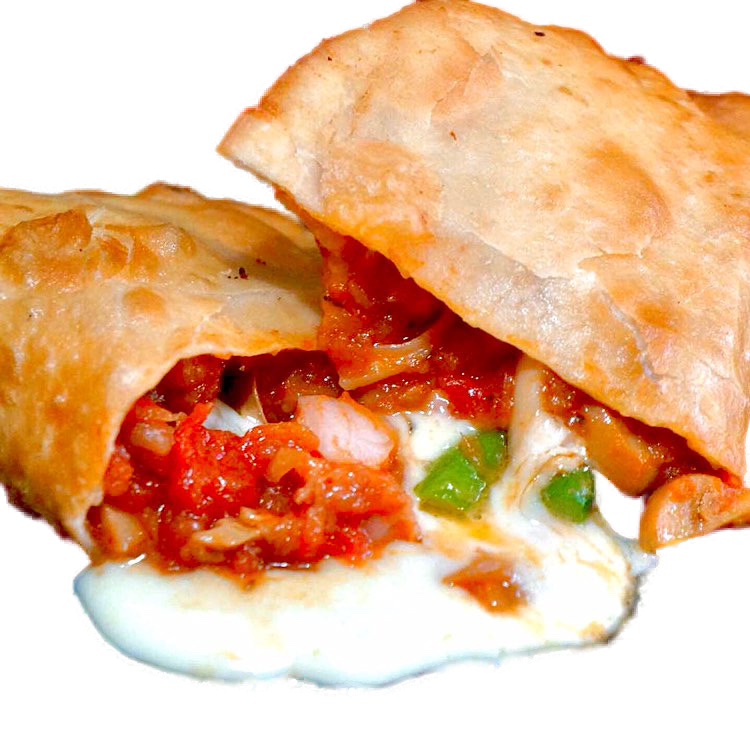
よりみちCafe
お手頃な美味しいをご用意しています！
ぜひお立ち寄りください！
MAMEKICHI
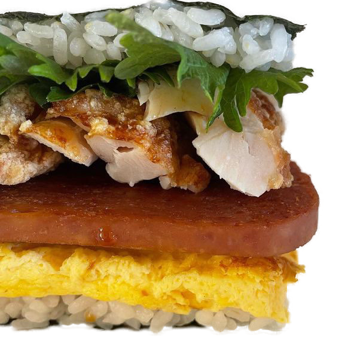
MAMEKICHI
沖縄のポークとたまごのおにぎりの店です。
沖縄より取り寄せて作ってます。
ボリューム満点でふわふわなたまごとポークが相性抜群！
色んなサンドがあるので、迷ってしまいますよ～
ポークが苦手な人でも美味しく食べていただけるような工夫をしています。
また、MAMEKICHIサーターアンダギーも重たくない！と大変好評を頂いております
是非一度、MAMEKICHIのおにぎりやサーターアンダギー食べて見てください
8kitchen
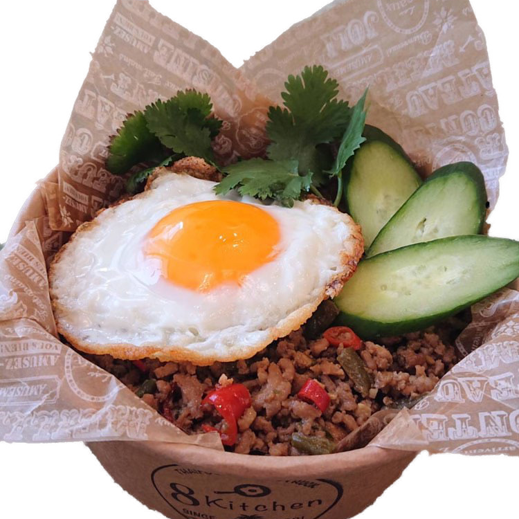
8kitchen
ガパオライス カオマンガイ ヤンニョムキチンなど、タイに済んでいた日本人が作る本格タイ料理はタイ産の高級食材を使ったこだわりの料理です。
出会えたこの機会に是非お召し上がりください。
くもサンド
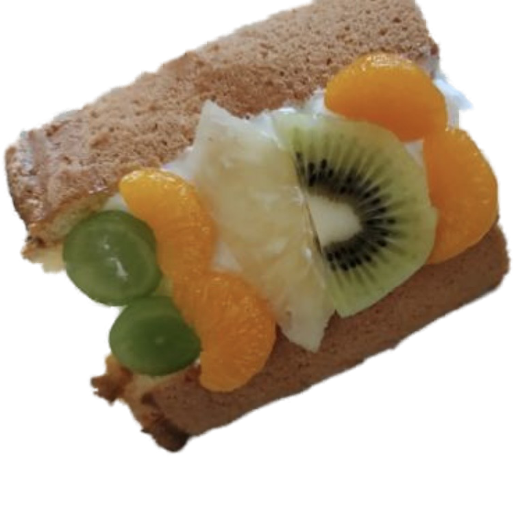
くもサンド
保存料、着色料、ベーキングパウダー不使用で体に優しい、ふわふわシフォンケーキ！
クリームも、こだわり甘さ控えめの生クリーム！
有名パティシエ考案の絶品クリーム使用！
Locos Paina
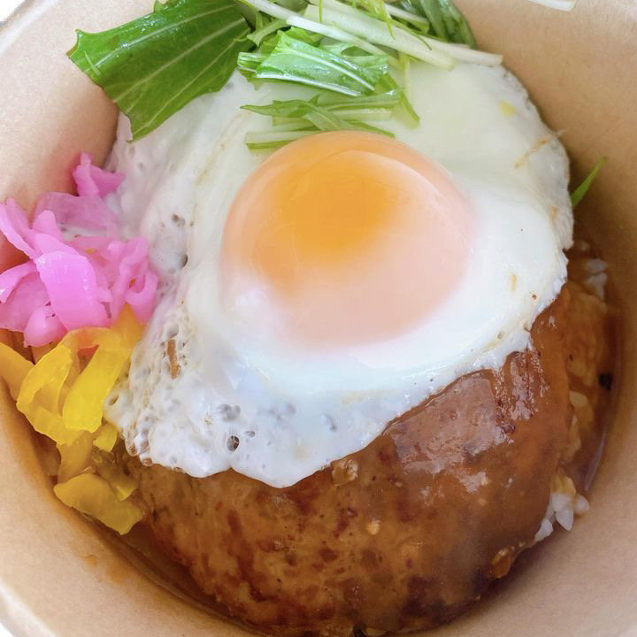
Locos Paina
アロハー！
当店はハワイアンフードを中心としたキッチンカーで、当日は、ロコモコ丼、アロハ焼きそばレインボーチュロス、唐揚げなどを販売予定です。
ぜひ食べに来てください！
両日
こまどや
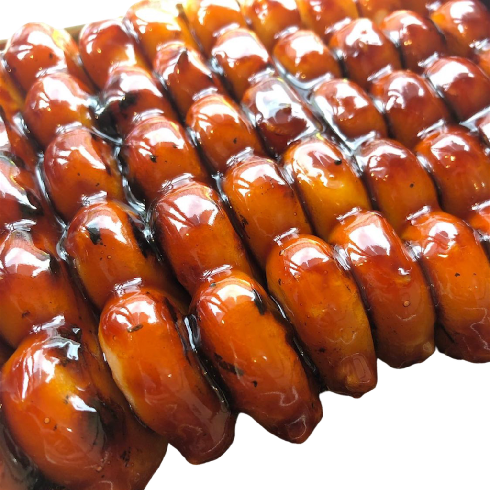
こまどや
食べたらみんなニコニコ笑顔。
老若男女幅広い世代で楽しんで頂ける季節に合った団子＆和菓子をご提供いたします。
Cappadocia Food Club
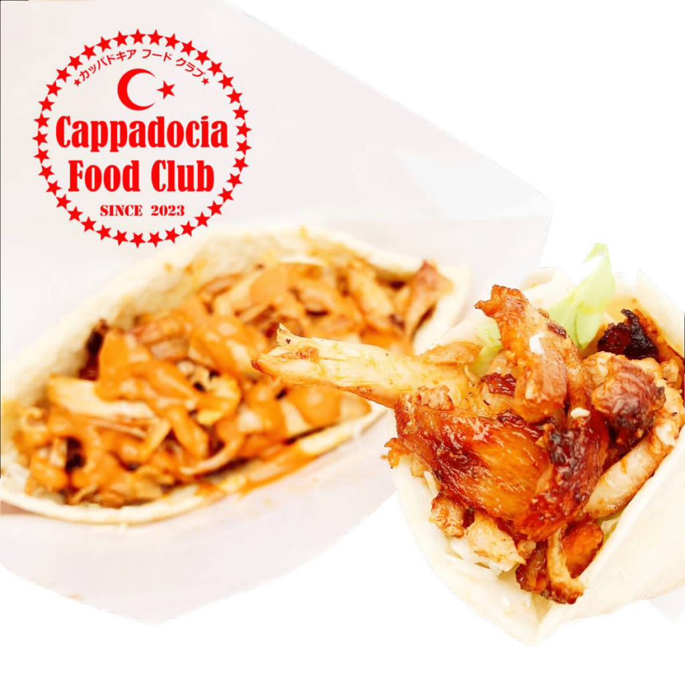
Cappadocia Food Club
陽気なトルコ人シェフが作る本格派ケバブサンド！
たっぷりお肉とオリジナルソースの相性抜群です！
美味しいケバブで学園祭を盛り上げます！
人気のもちもちロングポテト、トルコアイスもご用意しています♪
Instagramもチェック☆ cappadocia_food_club
8kitchen
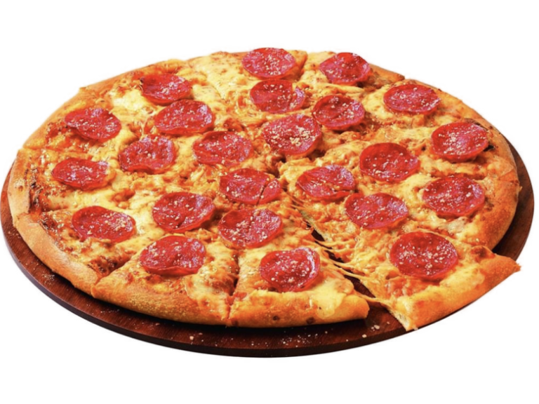
8kitchen
宅配ピザのパイオニアがピザだけでなくお店ごとこうよう祭に来ます！！
二日目
POCHA DELI Food Track
POCHA DELI Food Track
韓国屋台ポックンパ がプロデュースするフードトラック。
韓国ではポチャ＝屋台、デリは配達をあらわします。
ポチャデリはお弁当、コリアンフード、スイーツ、カフェなど様々なテイクアウトを展開していきます。
Jerry's UNO express
Jerry's UNO express
タコス、タコライス、ナチョス等々の販売
LAで人気の味を日本人に好みに少しアレンジを加えてご提供
メキシカンテイストあふれる味わいをお楽しみください！
店舗は大須と鶴舞と栄にあります、根強いファンの方が各地にいらっしゃいます。
からあげ専門店げってん
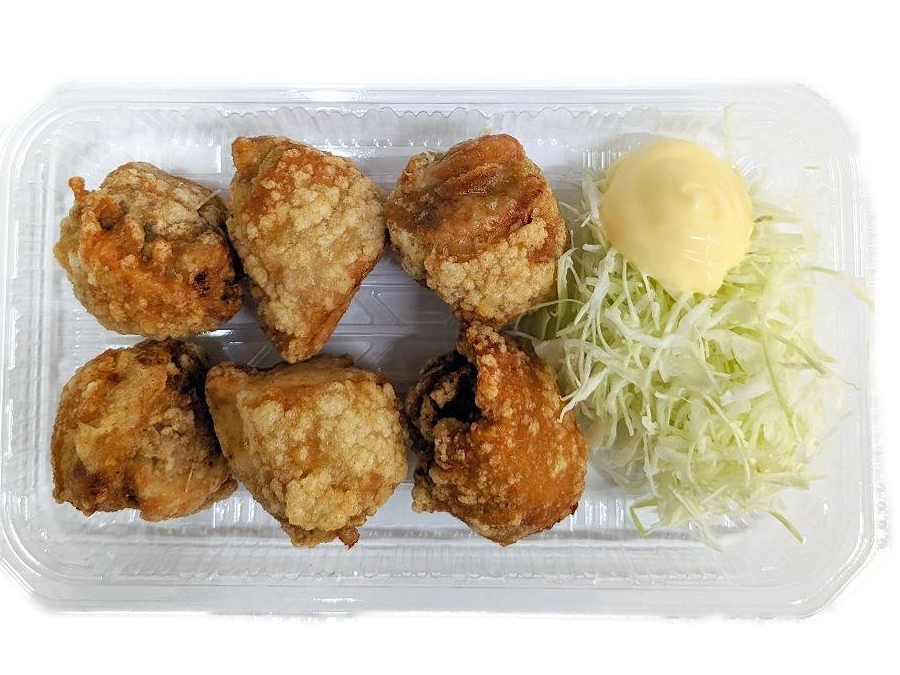
からあげ専門店げってん
三河地域で10年以上営業している、唐揚げ専門店と言えば「げってん」
丁寧な仕込みで、カラッと揚げて、冷めても美味しい唐揚げです。
天使のりんご飴
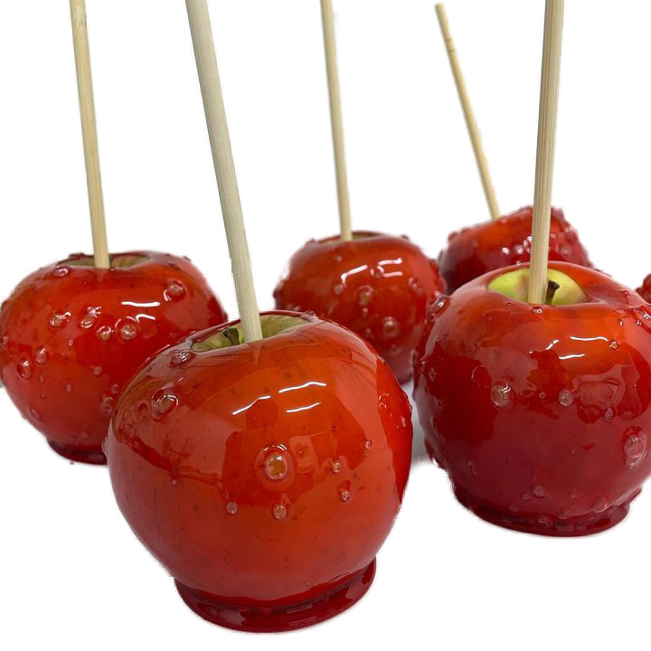
天使のりんご飴
季節に合わせ、厳選したりんごを使用しパリパリの雨とフレーバーでコーティングされたりんご飴です。
飴とりんごのジューシーさ味わって下さい！
ito cafe 1025
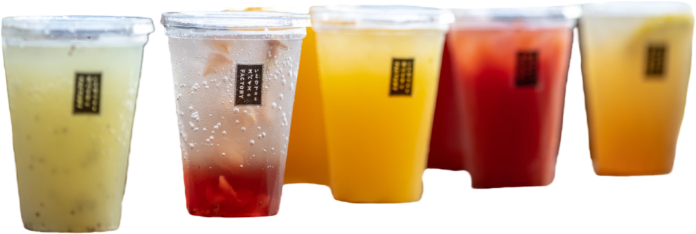
ito cafe 1025
肩肘張らない感じに、自然なものを使い丁寧に手作りで、br> 体にいいものを皆さんに届けているスパイス専門店です。